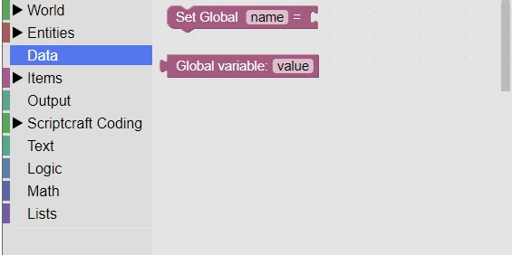

Global Data
Overview
Global data is used to remember states in the game
For example you can check if that game has started or remember when a boss monster has been summoned.
It is located in the Data section:

It differs from normal data stored in a listener event, as that data is forgotten.
Global data is remembered for the entire game and can be viewed in more than one listener event